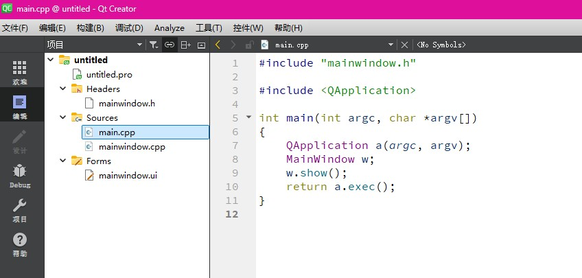
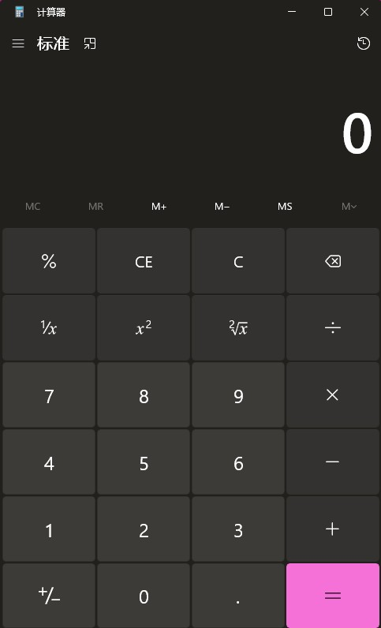
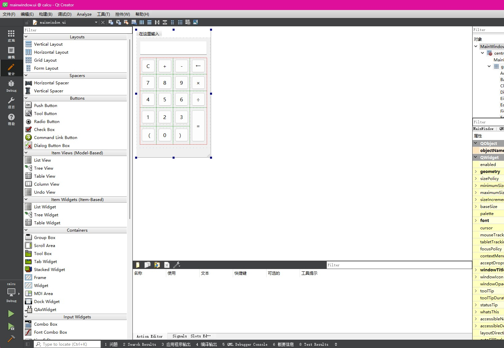
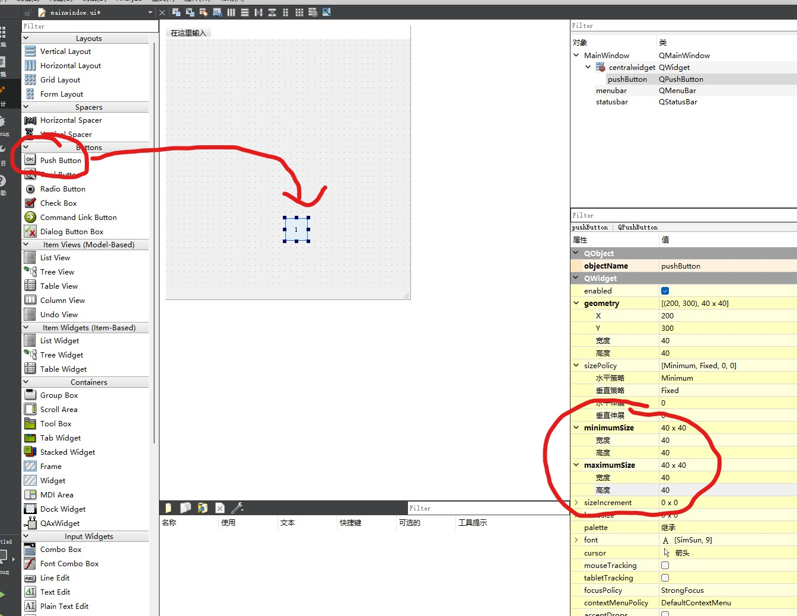
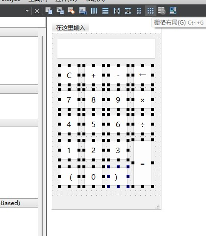
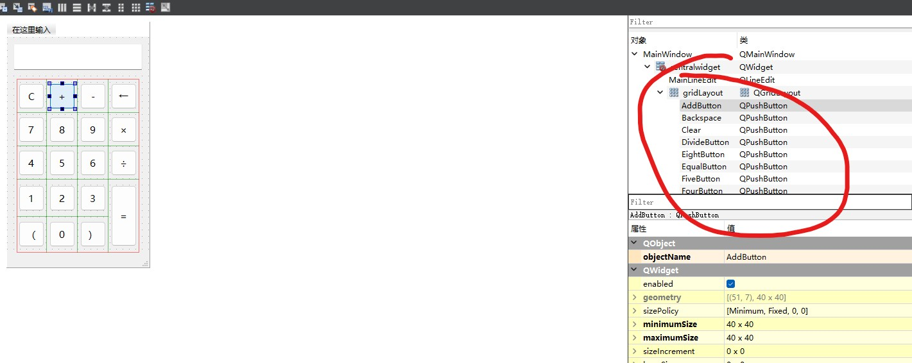
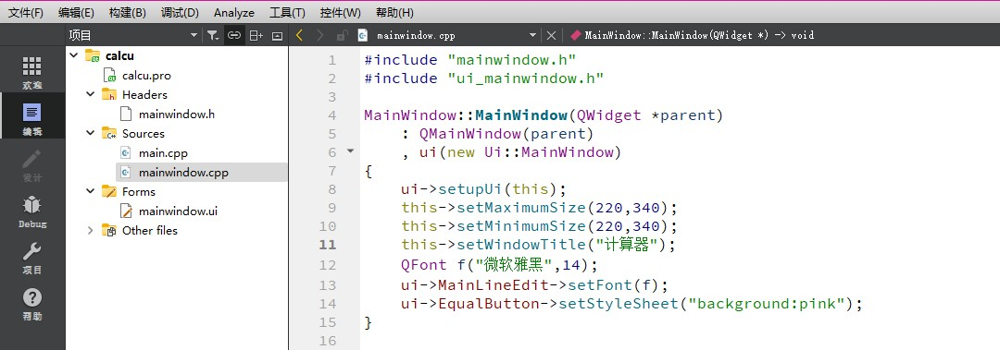
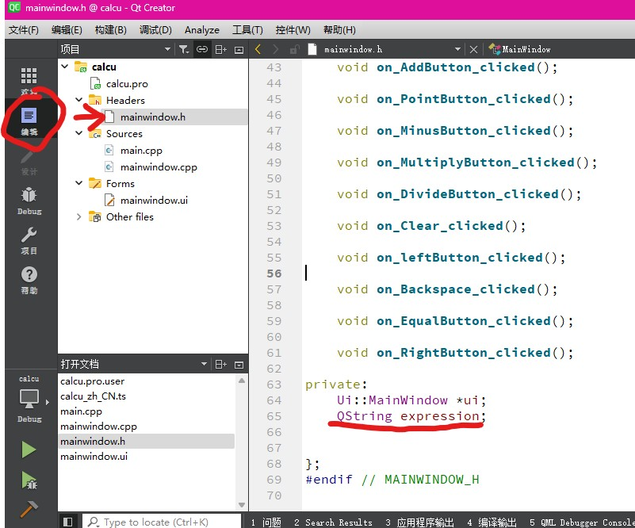

课程讲到了面向对象程序设计(C++)
那就根据课程写一些笔记
C++与C
C++是在C的基础上扩展了面向对象的内容,所以C++完全兼容C
大学中使用的开发环境是qt 非常好用 能很方便的做出一些带ui的程序 这里会自学 并赛一些比较基础的实例上来
一、基础四则计算器
新建项目
先新建一个项目 文件-新建文件或项目-选择一个模板-Application-Qt Widgets Application-右下角确认选择
随后选择项目名称 具体目录 配置好编译文件 就可以开始编写了

可以看到系统会默认给我们添加main.cpp、文件名.cpp、 文件名.h和一个.pro项目文件，点击完成，即可创建出一个Qt桌面程序。
关于这些文件的具体作用我们先按下不表 来看看如何一步步打造自己的计算器吧
设计计算器ui
每个计算器程序都会有自己的ui（用户页面）——例如我接下来展示的 微软自带的计算器

在编写具体的代码之前 我们需要参考类似的布局 设计出差不多的页面

↑程序的最终效果图
双击左边项目栏中的ui文件 进入ui编辑的页面 可以看到左半边是各种常见的组件 比如按钮 文本框 勾选框之类的 只要在左边选择想要的组件 选中并拖拽到屏幕中央 便可以在你设计的程序里添加相应的内容
首先是 按钮 既然是计算器 那就肯定要有按钮
从左边拖出一个 push button 双击更改其上显示的文字 然后在右下角minimumsize和maximumsize处将按钮大小固定为40×40 再次选中该按钮 用 ctrl+c ctrl+v 来复制出一样的按钮 其中等于号可以进行微调 设置成90×40的大小

排列好大致的位置后 将所有按钮选中 点击上方的 栅格布局 按钮 就可以将这些按钮组合起来 调整位置更加方便

整个计算器上边的文字框名为组件 Line edit 导入方法同理
接下来为了方便代码的编写 我们要为每个按钮起一个对应的对象名 点击按钮后在右上角会自动显示 双击来改名

整个窗口的大小可以通过代码或者点击整个ui页面的背景 和调整按钮一样调整最大和最小尺寸
剩下有一部分可选的调整需要在cpp文件中定义

1
2
3
4
5
6
7
8
9
10
11
12
| MainWindow::MainWindow(QWidget \*parent)
: QMainWindow(parent)
, ui(new Ui::MainWindow)
{
ui->setupUi(this);
this->setMaximumSize(220,340); //窗口最大尺寸
this->setMinimumSize(220,340); //窗口最小尺寸
this->setWindowTitle("计算器"); //决定窗口标题
QFont f("微软雅黑",14); //设置字体与字号
ui->MainLineEdit->setFont(f); //套用字体
ui->EqualButton->setStyleSheet("background:pink"); //设置等于号背景为粉色
}
|
程序编写
页面已经设计完毕了 接下来我们需要一个程序来让每个按钮实现他应有的功能
首先 为了让每个按钮被点击时加入对应的字符 我们需要一个能够盛放对应字符的变量
回到编辑页面 在.h头文件里定义一个QString变量 expression 用它来记录整个过程

接下来 为了让每个按钮实现对应功能 再次回到设计页面 对相应的按钮右键单击-转到槽- 在跳出的窗口里点击clicked()-ok
会自动跳转到相应函数的定义中 编写一段对应代码即可
1
2
3
4
5
| void MainWindow::on\_TwoButton\_clicked() //可能会根据程序和对象名有所不同
{
expression += "[对应字符]"; //在expression中插入对应的字符
ui->MainLineEdit->setText(expression); //让文本框中显示expression中的字符
}
|
依葫芦画瓢 把所有对应的按钮进行编写 清空 退格 等于 按钮则需要特殊的定义
1
2
3
4
5
6
7
8
9
10
11
12
13
14
15
16
17
18
19
20
21
22
23
24
25
26
27
28
29
30
31
32
33
34
35
36
37
38
39
40
41
42
43
44
45
46
47
48
49
50
51
52
53
54
55
56
57
58
59
60
61
62
63
64
65
66
67
68
69
70
71
72
73
74
75
76
77
78
79
80
81
82
83
84
85
86
87
88
89
90
91
92
93
94
95
96
97
98
99
100
101
102
103
| //清空
void MainWindow::on\_Clear\_clicked()
{
expression.clear();
ui->MainLineEdit->clear();
}
//退格
void MainWindow::on\_Backspace\_clicked()
{
expression.chop(1);
ui->MainLineEdit->setText(expression);
}
//等于
void MainWindow::on\_EqualButton\_clicked() {
if (expression.isEmpty()) {
ui->MainLineEdit->setText("Error");
return;
}
QStack<double> s\_num; // 改为double以支持浮点
QStack<char> s\_opt;
QByteArray ba = expression.toUtf8();
const char \*opt = ba.constData();
int i = 0;
double tmp = 0;
bool isNum = false;
while (opt[i] != '\0' || !s\_opt.empty()) {
if (isdigit(opt[i])) {
tmp = tmp \* 10 + (opt[i] - '0');
i++;
isNum = true;
} else if (opt[i] == '.' && isNum) {
// 处理小数部分（需扩展逻辑）
i++;
double fraction = 0.1;
while (isdigit(opt[i])) {
tmp += (opt[i] - '0') \* fraction;
fraction \*= 0.1;
i++;
}
} else {
if (isNum) {
s\_num.push(tmp);
tmp = 0;
isNum = false;
}
// 运算符处理逻辑
if (s\_opt.empty() || Priority(opt[i]) > Priority(s\_opt.top()) ||
(s\_opt.top() == '(' && opt[i] != ')')) {
if (opt[i] != '\0') {
s\_opt.push(opt[i]);
i++;
}
} else {
while (!s\_opt.empty() &&
(Priority(opt[i]) <= Priority(s\_opt.top()) || opt[i] == ')')) {
char ch = s\_opt.pop();
if (ch == '(' && opt[i] == ')') {
i++;
break;
}
if (s\_num.size() < 2) {
ui->MainLineEdit->setText("Error");
return;
}
double num2 = s\_num.pop();
double num1 = s\_num.pop();
switch (ch) {
case '+': s\_num.push(num1 + num2); break;
case '-': s\_num.push(num1 - num2); break;
case '\*': s\_num.push(num1 \* num2); break;
case '/':
if (num2 == 0) {
ui->MainLineEdit->setText("Error: Div 0");
return;
}
s\_num.push(num1 / num2);
break;
}
}
}
}
}
if (isNum) s\_num.push(tmp); // 处理最后一个数字
if (s\_num.empty()) {
ui->MainLineEdit->setText("Error");
} else {
ui->MainLineEdit->setText(QString::number(s\_num.top()));
}
}
int MainWindow::Priority(char ch) {
switch(ch) {
case '(':
return 3;
case '\*':
case '/':
return 2;
case '+':
case '-':
return 1;
default:
return 0;
}
}
|
都设置完之后点击左下角的编译 就可以测试成功运行了
注:cmd环境下不会显示UTF-8 需要在main函数中预先输入system(“chcp 65001”);
结尾/引用
We are just another visitor in a transient world.